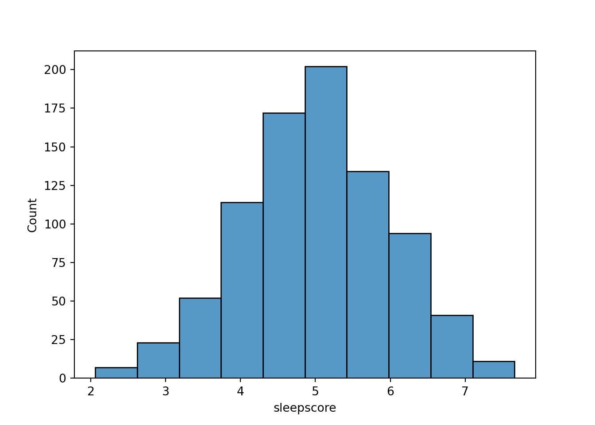
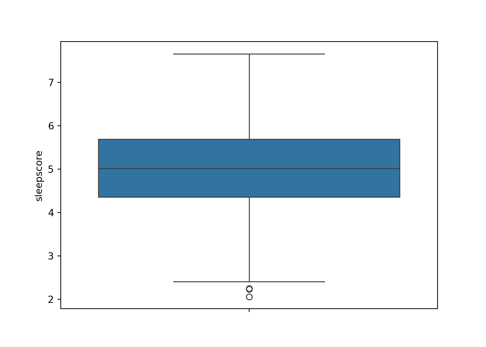
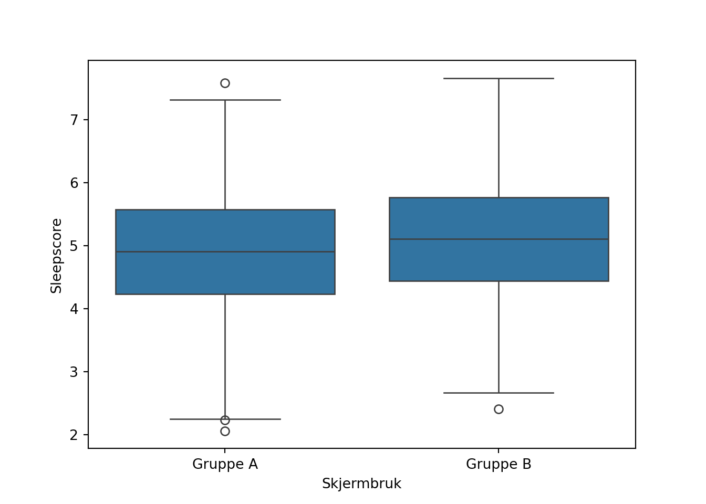

Matplotlib is building the font cache; this may take a moment.test_TMA4269
Data science
Modul A: Data og vitenskap
Læringsmål
Visualisering, sammenligne grupper
Observasjonelle og designede studier
Korrelasjon (samvariasjon) mot kausalitet
Representative utvalg
Signifikant effekt mot relevant effekt
Falske funn (spurious correlations) som følge av å gjøre mange sammenligninger
Undervisning
I første økt gjennomføres case A.1. i grupper. Økta starter med nødvendig repetisjon på tavle. Mellom hver av de tre delene er det en gjennomgang av foreleser om aktuelle tema. (Hvor lang tid tar egentlig noe sånt?!)
I andre økt holdes en forelesning om de aktuelle temaene?
Vurdering
Poeng for deltakelse (inkl. en leveranse) i gruppediskusjoner (økt 1)
Quiz? Flervalgsoppgaver som er mulig å gjøre siste 15 min av økt 2, men åpen resten av uka for de som ikke har tid/mulighet?
Case A.1: Søvn og skjermbruk
Forkunnskap / repetisjon
Beskrivende statistikk; gjennomsnitt, standardavvik, histogram, boksplott
Sammenligning av to grupper med t-test. Signifikansnivå og p-verdi.
Del 1
I en studie om søvnkvalitet deltok 850 personer. Søvnkvalitet ble målt ved hjelp av en pulsklokke som hver deltaker benyttet dag og natt i en uke. Et gjennomsnittsresultat over alle nettene ble deretter brukt som mål på søvnkvalitet, ‘sleepscore’. En oppsummering av de 850 deltakernes ‘sleepscore’ er vist i Figur X.
sns.histplot(df['sleepscore'], kde=False, bins = 10)
plt.show()
sns.boxplot(df['sleepscore'])
plt.show()

Deltakerne i studien ble også utdelt et spørreskjema med påstander om helse og livsstil. Hver påstand ble besvart med avkrysning i en av kategoriene ‘i svært liten grad’, ‘i liten grad’, ‘i noen grad’, ‘i stor grad’, ‘i svært stor grad’.
I studien fant man en signifikant sammenheng mellom søvnkvalitet (sleepscore) og skjermbruk; gjennomsnittlig sleepscore blant deltakere som brukte skjerm på soverommet før innsovning (‘i stor grad’ eller ‘i svært stor grad’) var signikant lavere enn hos deltakere som ikke brukte skjerm (‘i svært liten grad’, ‘i liten grad’). De to gruppene ble sammenlignet med en to-utvalgs t-test ved signifikansnivå \(\alpha = 0.05\) med resultat \(p = 0.025\). Null-hypotesen om like grupper ble dermed forkastet.
Diskuter i gruppe:
Hva var resultatet av studien?
Basert på denne studien, kan du gi anbefalinger til en venn når det gjelder skjermbruk før leggetid?
Er det noen tall eller annen informasjon dere savner? Hvilken?
pp
Oppgave i gruppe:
- Ta utgangspunkt i Figur 1 som visualiserer sleepscore for alle 850 deltakere. Datasettet kan deles opp i subgrupper A og B, der gruppe A er de deltakerne som brukte skjerm på soverommet før innsovning (‘i stor grad’ eller ‘i svært stor grad’) og gruppe B er de deltakerne som ikke brukte skjerm (‘i svært liten grad’, ‘i liten grad’). Hva slags visualisering (figurer) kan dere bruke for å illustrere forskjellen i ‘sleepscore’ mellom gruppene? Lag en skisse som leveres inn.
Del 2
Gjennomsnittlig sleepscore i gruppe A er 4.89 mens gjennomsnittlig sleepscore i gruppe B er 5.11. Søvnkvalitet er - gruppevis - presentert i figur Y.

Diskuter i gruppe:
- Endrer denne informasjonen deres oppfatning om studien? Hvordan stemmer figuren med deres egen skisse?
Del 3
Spørreskjemaet som deltakerne i studien fikk utdelt inneholdt 100 påstander. Et utdrag av dataene er vist under. Svaralternativene er kodet som følger; 1: ‘i svært liten grad’, 2:‘i liten grad’, 3: ‘i noen grad’, 4: ‘i stor grad’, 5:‘i svært stor grad’.
print(df.head()) sleepscore q1 q2 q3 q4 q5 q6 ... q94 q95 q96 q97 q98 q99 q100
0 5.91 1 5 5 2 4 2 ... 3 2 1 2 5 3 1
1 3.47 1 2 4 1 2 1 ... 4 2 4 5 3 3 5
2 6.04 1 2 2 4 1 3 ... 5 3 3 4 2 5 1
3 6.65 2 4 2 2 5 4 ... 1 2 2 1 4 2 2
4 4.64 3 1 4 3 1 4 ... 2 5 1 2 1 2 4
[5 rows x 101 columns]Sammenheng med søvnkvalitet ble undersøkt for alle de 100 påstandene. Det ble observert en sammenheng med 5 påstander (q23, \(p = 0.003\), q88, \(p = 0.012\), q1, \(p=0.024\) og q13, \(p = 0.033\)). Det er påstand ‘q23’ som gjaldt skjermbruk før leggetid.
Tenk deg at du gjør et forsøk som kan ende med utfallene 0 eller 1. Sjansen for at utfallet blir 1 er 0.05 (5%). Dersom du gjør 100 slike forsøk, hvor mange 1-ere forventer du å få?
Dersom vi gjennomfører en hypotetest med signifikansinvå 0.05, og nullhypotesen (f.eks. ingen sammenheng) er sann, er det 5% sjanse for et falskt funn. Dersom vi gjør 100 slike undersøkelser - og i alle situasjonene er nullhypotesen sann - hvor mange falske funn forventer vi?
Diskuter i gruppe:
Har dere endret syn på resultatet av studien (Del 1)?
Kan dere vurdere om det rapporterte funnet angående skjermbruk og søvnkvalitet er et falskt funn?
Dere skal etablere en forskningsgruppe som jobber med søvnkvalitet, kan dere bruke resultatet av denne studien til å gjøre videre undersøkelser? Hva kan gjøres for å bekrefte/avkrefte resultatet fra studien?
Avslutning: p-hacking og referanser. Hvordan kunne vi gjort studien “riktig”?